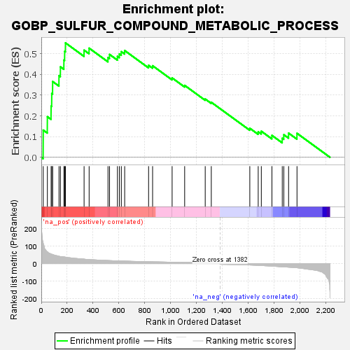
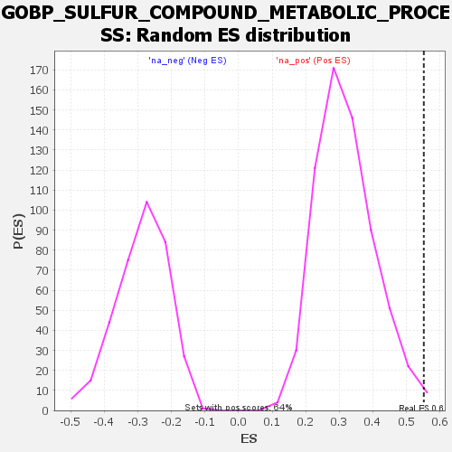

| Dataset | rank |
| Phenotype | NoPhenotypeAvailable |
| Upregulated in class | na_pos |
| GeneSet | GOBP_SULFUR_COMPOUND_METABOLIC_PROCESS |
| Enrichment Score (ES) | 0.55192167 |
| Normalized Enrichment Score (NES) | 1.7219515 |
| Nominal p-value | 0.010869565 |
| FDR q-value | 0.5666737 |
| FWER p-Value | 0.99 |

| SYMBOL | RANK IN GENE LIST | RANK METRIC SCORE | RUNNING ES | CORE ENRICHMENT | |
|---|---|---|---|---|---|
| 1 | PANK3 | 15 | 116.890 | 0.1311 | Yes |
| 2 | ICMT | 47 | 66.896 | 0.1959 | Yes |
| 3 | ELOVL7 | 76 | 54.010 | 0.2469 | Yes |
| 4 | METTL16 | 81 | 53.248 | 0.3079 | Yes |
| 5 | SUCLG1 | 88 | 51.105 | 0.3655 | Yes |
| 6 | FAR1 | 137 | 42.289 | 0.3936 | Yes |
| 7 | FASN | 148 | 40.130 | 0.4364 | Yes |
| 8 | PDPR | 175 | 37.836 | 0.4692 | Yes |
| 9 | MTHFR | 181 | 37.360 | 0.5110 | Yes |
| 10 | GLO1 | 187 | 36.602 | 0.5519 | Yes |
| 11 | AASS | 331 | 25.368 | 0.5169 | No |
| 12 | OPLAH | 370 | 22.780 | 0.5265 | No |
| 13 | ABCD1 | 516 | 17.390 | 0.4812 | No |
| 14 | GGT1 | 528 | 17.012 | 0.4963 | No |
| 15 | ACSF2 | 589 | 15.353 | 0.4871 | No |
| 16 | ACSS2 | 604 | 15.063 | 0.4985 | No |
| 17 | SUOX | 619 | 14.808 | 0.5097 | No |
| 18 | CPS1 | 645 | 14.193 | 0.5150 | No |
| 19 | STAT5A | 830 | 10.374 | 0.4437 | No |
| 20 | ACSL1 | 861 | 9.850 | 0.4417 | No |
| 21 | CBS | 1012 | 7.881 | 0.3829 | No |
| 22 | SIRT4 | 1109 | 6.530 | 0.3470 | No |
| 23 | SULT2B1 | 1268 | 4.971 | 0.2811 | No |
| 24 | DGAT2 | 1315 | 4.472 | 0.2655 | No |
| 25 | SLC25A19 | 1613 | -7.979 | 0.1400 | No |
| 26 | FAR2 | 1678 | -10.237 | 0.1230 | No |
| 27 | AADAT | 1702 | -11.106 | 0.1257 | No |
| 28 | GCLM | 1784 | -14.262 | 0.1057 | No |
| 29 | CHAC2 | 1864 | -18.463 | 0.0916 | No |
| 30 | SLC25A10 | 1876 | -18.885 | 0.1089 | No |
| 31 | SLC7A11 | 1913 | -20.443 | 0.1167 | No |
| 32 | AKR1A1 | 1978 | -23.879 | 0.1158 | No |
